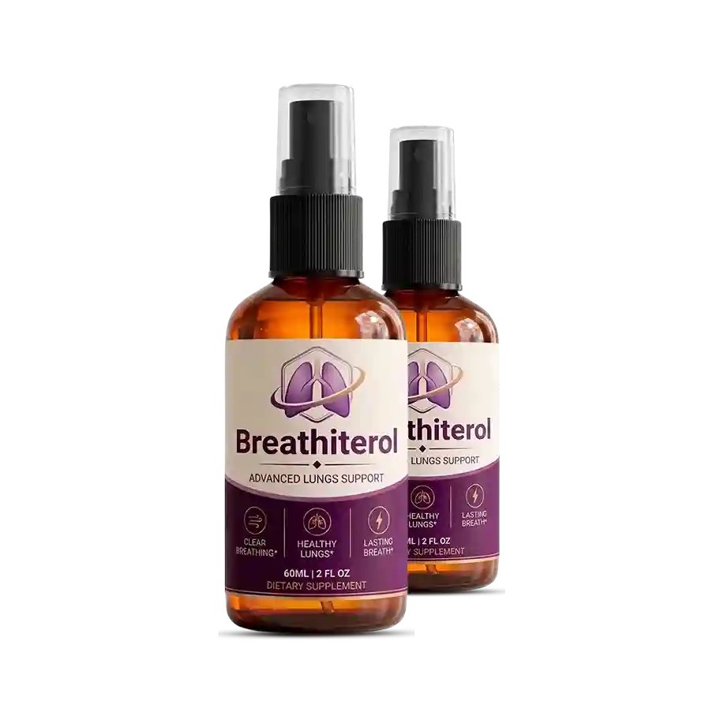
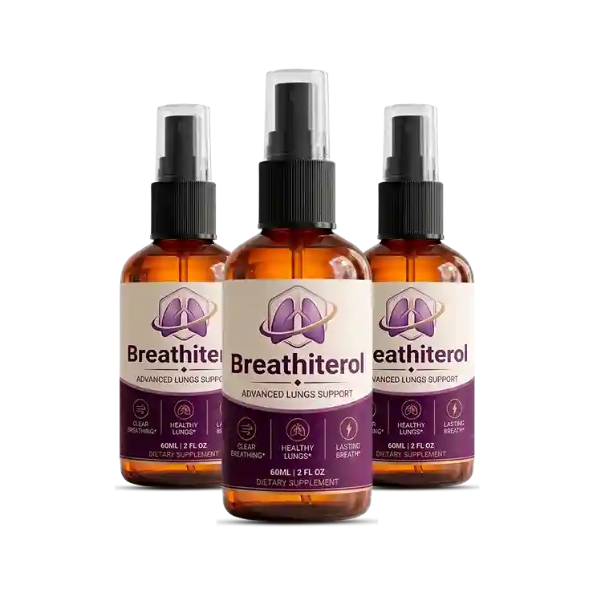

Breathiterol is formulated to support respiratory wellness through a multi-phase approach — from initial absorption to sustained lung health. Here’s how the mechanism works.

Traditional capsule supplements must first be swallowed, travel to the stomach, and dissolve before their active compounds can be absorbed. This process introduces delays and potential losses in bioavailability.
Breathiterol uses an oral spray format. When administered as directed on the label, the liquid formula enters the digestive tract in solution form — bypassing the dissolution step that solid supplements require.
According to research reviewed by the U.S. Food & Drug Administration's dietary supplement guidance, liquid supplements may offer absorption advantages for certain nutrient types compared to hard-pressed tablets, particularly for compounds with solubility requirements.
Once absorbed, Breathiterol's active compounds are formulated to support the respiratory system — including the bronchial airways, lung tissue, and the mucociliary apparatus that helps clear the airways naturally.
The respiratory tract is lined with a mucociliary system: tiny cilia that move mucus and particles out of the airways. Botanical and nutraceutical compounds in lung support formulas may help support this natural clearing function.
Research published in the American Journal of Respiratory and Critical Care Medicine highlights the importance of mucociliary health for overall respiratory wellness and the potential role of natural compounds in supporting it.

With consistent daily use, Breathiterol's formula is designed to support clearer, more comfortable breathing as part of daily life — whether during exercise, at work, or at rest.
Botanical compounds like mullein and eucalyptus extract have been used for centuries in traditional medicine for respiratory comfort. Modern research continues to explore their mechanisms:
Respiratory health is not a one-time event — it is an ongoing biological process that benefits from consistent nutritional support. Phase 4 of Breathiterol's approach is about long-term wellness maintenance:
The immune components in Breathiterol support the body's ongoing respiratory immunity — important during seasonal changes and environmental challenges.
Antioxidant compounds in the formula support ongoing protection of respiratory tissue against oxidative stress from environmental pollutants and normal metabolic processes.
Regular daily use supports the respiratory system as part of a proactive wellness routine — complementing exercise, healthy nutrition, and avoiding respiratory irritants.
The 6-bottle package (180-day supply) is designed for those committed to a long-term respiratory wellness approach — and offers the best per-bottle value at $49/bottle.
Before first use, carefully read all directions on the Breathiterol product label. Dosage and administration instructions from the manufacturer are the authoritative guide for use.
Breathiterol is administered orally. Follow the manufacturer's serving directions for amount and frequency. Do not exceed the recommended amount on the label.
For best results, take Breathiterol every day as part of your regular wellness routine. The manufacturer recommends at least 30 continuous days to allow the formula to build up in your system.
Follow storage instructions on the label. Keep out of reach of children. Store in a cool, dry place away from direct sunlight unless otherwise directed.
Always consult a licensed healthcare professional before starting Breathiterol — especially if you are pregnant, nursing, have a medical condition, or take any prescription medications.